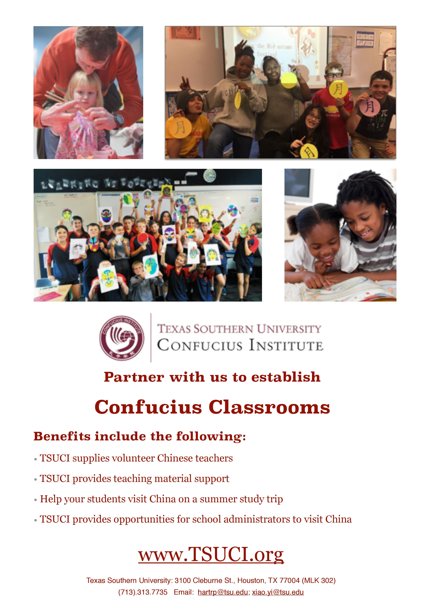

“Confucius Classrooms” Program Introduction
The Confucius Institute Headquarters, located in Beijing, is a non-profit organisation that has the independent status of a corporate body. The Headquarters have provided scope for people all over the world to learn about Chinese language and culture by establishing Confucius Institutes and Confucius Classrooms. Confucius Institutes/Classrooms have become a platform for cultural exchanges between China and the world as well as a bridge reinforcing friendship and cooperation between China and the rest of the world and are much welcomed across the globe.
Confucius Institutes/Classrooms have adopted flexible teaching patterns and are adapted to local conditions when teaching Chinese language and promoting culture in foreign primary schools, secondary schools, communities and enterprises. In 2009, Confucius Institutes/Classrooms around the world offered 9,000 Chinese courses of a multitude of styles, with a total enrolment of 260,000, a 130,000 strong enrolment increase from the previous year. More than 7,500 cultural exchange activities took place, involving the participation of over 3 million reaching double the participation figures of the corresponding period of the previous year.
A newly established Confucius Classroom will receive aid to its initial operation in the form of a set amount of funds provided by the Chinese Parties. Managed by the local Confucius Institute, the funds will be used to develop Chinese related courses and activities.
Any school that corporate with local Confucius Institute to establish Confucius Classrooms shall enjoy the following benefits:
1. Confucius Institute Scholarship Every Confucius Classroom is entitled to apply for this scholarship. A one-year scholarship for one student or two six-month scholarships for two students could be applied with every 50 enrolments. For more information, please refer: http://cis.chinese.cn/
2. Summer/Winter Trip to China Every Confucius Institute is entitled to apply a certain amount of fund to hold summer/winter trip to China. Any officially enrolled Confucius Classroom students who finish a 3-month study period or 40 academic hour shall have the right to go on the trip. The trip lasts 2 to 3 weeks and all participants’ expenses (except international flight tickets) are covered by the Chinese Parties. (State and National law may have different requirements)
3. Chinese Language Instructor Training Programs Every Confucius Classroom is also entitled to send local Chinese language instructors to participate training programs in China. All expenses (include accommodation, dinning and training cost) will be covered by the Confucius Institute Headquarters.
The local Confucius Institute will provide the following services:1. Chinese language teaching;
2. Training Chinese language instructors and providing Chinese language teaching resources;
3. Holding the HSK and YCT examination (Chinese Proficiency Test) and tests for the Certification of the Chinese Language Teachers;
4. Providing information and consultative services concerning China's education, culture, and so forth;
5. Conducting language and cultural exchange activities between China and other countries.
Thank you for your interests and time! Look forward to cooperating with you!
For more information, please consult the Texas Southern University Confucius Institute. Address: MLK centre 302, 3100 Cleburne Texas Southern University. Tel:(713)-313-7735 Email:hartp@tsu.edu; xiao.yi@tsu.edu